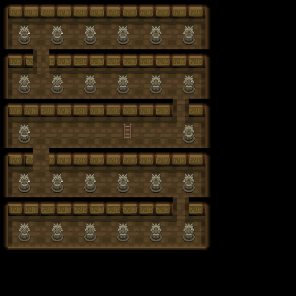
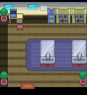

035 阿露福遗迹之谜
一句话目标：加入阿露福遗迹调查队，按研究员给出的课题逐步调查遗迹，最终集齐所有形态的未知图腾、解开遗迹真相。
接取地点
- 阿露福遗迹・地下（地图 1:50），从上方掉落到 (4,6)/(5,6) 时的研究员（local_id 4）。
- 后续课题由阿露福遗迹内的资深研究员（室内地图 56:9，local_id 2，坐标 7,3）发布。
- 当前目录描述：解开有关阿露福遗迹的真相！
准备条件
- 需先在解密石室解开石版拼图，从上方掉入遗迹地下，才能触发入队剧情。
- 入队时变量 20893 须为未置位状态（触发后置 1，防止重复触发）。
操作步骤
- 前往阿露福遗迹的解密石室，完成石版拼图后从上方掉落，落点 (4,6)/(5,6) 触发脚本
0x08AF0695或0x08AF0803。研究员出现：“从上面掉下来，也就是说……你完成了石版的拼图？！……从现在开始，你就是我们遗迹研究所的一员了！我把这个笔记给你吧，抓到的未知图腾会自动记录起来，非常方便！” - 获得 未知图腾笔记（道具 740 ×1），脚本置接取旗标 5969、变量 20893=1，显示“[玩家/变量]成为遗迹调查队的一员！”，研究员随即离场（置旗标 5998）。
- 之后到 56:9 找资深研究员（local_id 2，坐标 7,3）对话，依次推进课题（对话脚本
0x08EC8125→0x08EC857F）： - 课题一（旗标 2784）：记录后进入“遗迹中的神秘的电波”主题（该段第一段正文未在包内提取）。 - 课题二：在遗迹里打开收音机，收到未知图腾之间用神秘电波对话的证据（外部置旗标 2785），再找研究员确认，脚本置 2786；下一课题为“未知图腾研究”——已确认 26 种文字，数量与文字种类相同，需集齐全部；并提示解开 3 个解密石室的拼图后遗迹会出现更多种类。 - 课题三：集齐已确认的 26 种未知图腾（旗标 5866–5891），再找研究员记录（置 2787）；下一课题为“遗迹中的秘密房间”——解密石室最里面墙上会有未知图腾摆成的图案，按图案指示行动即可进入。 - 课题四：进入秘密房间（外部置旗标 2788），再找研究员记录（置 2789）；下一课题为“又有两种新文字被发现”。 - 课题五：找齐最后两种未知图腾（旗标 5892、5893）。 - 集齐 26+2 共 28 种后，与研究员对话触发结算脚本
0x08EC857F：他解读出遗迹中未知图腾曾与人类共同生活、人类建了地下房间的宝可梦像等真相，并说“考古也是学无止境啊……谢谢你这段时间的协助！”。
交付检查
- 完成旗标 5970 置位即结题；判定条件为旗标 5892、5893 均已置位（即最后两种未知图腾也已记录）。
奖励
- 秘密琥珀（道具 354）×1
- 贝壳化石（道具 357）×1
- 甲壳化石（道具 358）×1
- 15 点 BracerPoints
- 15000$
容易卡住的位置
- 入队必须先“从上方掉落”，单纯到遗迹里找研究员只会得到“这个遗迹大概建造于 1500 年前……”的讲解。
- 课题推进依赖多个外部旗标：收音机电波（2785）与找到秘密房间（2788）的置位方式在本包内未定位，需相应去遗迹内实践后才会推进。
- 需集齐 28 种未知图腾（26 种已确认 + 秘密房间相关两种），漏一种都无法结题。
来源与待补
- 包：
data/quest_packets/035.json；入队0x08AF0695/0x08AF0803/0x08AF0972/0x08AF098D，研究员对话链0x08EC8125–0x08EC857F。 - 相关道具：未知图腾笔记 0740、秘密琥珀 0354、贝壳化石 0357、甲壳化石 0358。
- 相关宝可梦：未知图腾 0201。
- 相关地图：阿露福遗迹地下 1:50、阿露福遗迹 56:9。
- 未定位/待补：课题一与若干记录段落的正文（如
0x08EC83CF、0x08EC851C等 loadpointer）未在包内提取；外部旗标 2785、2788 的置位脚本未定位；26/28 种未知图腾的对应旗标编号与具体获得地点需另查。
地点地图
共享RGB底图；点击可缩放定位。数字对应本页相关地点，不代表地图上全部事件。
阿露福遗迹

1 阿露福遗迹之谜（4,6）
阿露福遗迹

1 阿露福遗迹之谜（7,3）